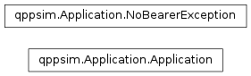

qppsim.Application module¶
Documentation¶
Module that provides the implementation of an Application, and an exception to raise when the Application attempts to send a packet and has no bearer associated.
-
class
qppsim.Application.Application(name, packet_size, packet_interval, packets_session, session_interval, start_time, stop_time)[source]¶ Bases:
objectClass that defines an Application. An application is defined by the data rate (composed of the packet size, inter-packet interval, number of packets per session, inter-session interval (all of them defined by tuples with the name of a distribution in numpy.random, and a list with parameters to such distribution)), the start and stop times, and a name.
The class also contains a pointer to the Bearer where the packets generated are to be queued, and through it, to the UE where the application is installed.
The class provides methods for starting and stopping the packet generation, sending and receiving packets, and change the bearer associated with this application.
-
bearer¶ Return the bearer where this application queues the packets generated
-
change_bearer(new_bearer)[source]¶ Change the bearer associated with this application. This may happen due to pre-emption, or due to new bearer activation during the simulation.
-
generate_packet()[source]¶ Generate a packet, and schedule the event for the next packet generation. On the computation of the time for the next event, we need to consider if we are the last packet in a session, to adjust the interval until the next event.
-
name¶ Return the name of the Application
-
packet_interval¶ Return the inter-packet interval tuple
-
packet_size¶ Return the packet size tuple
-
packets_session¶ Return the packets per session tuple
-
receive_packet(packet)[source]¶ Receive a packet. The only action performed is removing the network overhead and tracing the event in the application traffic trace.
-
session_interval¶ Return the inter-session interval tuple
-
start_time¶ Return the start time
-
stop_app()[source]¶ Stop the application. This method is called when stopping the application ‘externally’. This also deactivates the associated bearer unless it is a default bearer.
-
stop_time¶ Return the stop time
-
-
qppsim.Application.NETWORK_OVERHEAD= 30¶ Network overhead in bytes to be used when tracing the network-level packet size. This value is taken from the ns-3 simulations, as follows:
- 8 Bytes in UDP header
- 20 Bytes in IPv4 header
- 2 Bytes in PDCP header